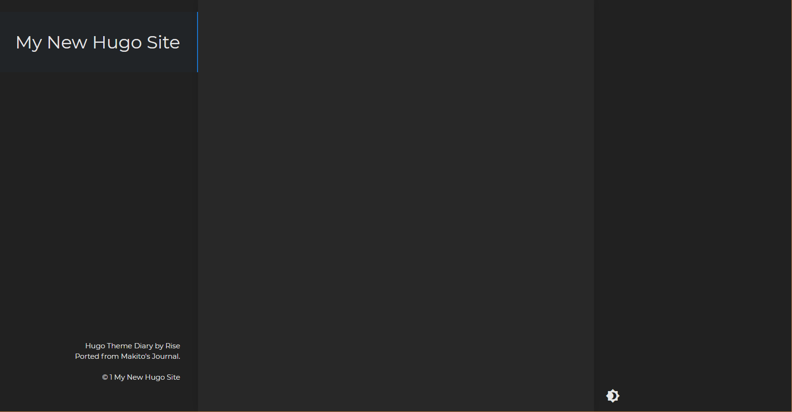

Step1 安装hugo
下载链接：https://github.com/gohugoio/hugo/releases
选择最新版本进行安装（建议安装hugo_extended版本）。
注意解压后需配置环境变量，可以使用version命令测试是否配置成功：
hugo version
Step2 新建博客站点
使用命令行，输入如下命令新建博客站点：
hugo new site BLOGNAME
Step3 下载并配置主题
主题下载链接：https://themes.gohugo.io/
官网提供了许多主题供用户选择，按照主题下的安装配置说明进行主题的下载与配置。
这里以Diary主题为例，首先在博客的根目录下，使用终端进行git初始化：
git init
并执行：
git submodule add https://github.com/AmazingRise/hugo-theme-diary.git themes/diary
主题会自动下载至根目录下的themes文件夹中。下载完成后，启动hugo本地服务并指定该主题：
hugo server -t diary --buildDrafts
可以通过访问localhost:1313进入本地部署的博客站点。可以看到，hugo已经为我们配置好了下载的主题。

Step4 新建博客
同样，在终端中执行：
hugo new post/文章名称.md
可以使用Typora来编辑文章，就像我现在这样。
Step5 部署到github
首先进入自己的github，新建一个repository，注意名称要使用小写昵称全名.github.io。
在终端执行：
hugo --theme=diary --baseUrl="https://gsemir0418.github.io/" --buildDrafts
此时在根目录下，hugo为我们生成了一个public文件夹，我们只需利用github将此文件夹上传到库中即可。
在public文件夹下，进行git初始化。
git init
git add .
git commit -m "v0"
此时需要注册GitHub信息
git config --global user.email "you@example.com"
git config --global user.name "Your Name"
注册完成后再次提交即可。
关联远端git仓库：
git remote add orgin https://github.com/GSemir0418/gsemir0418.github.io.git
此时就可以将文件推上GitHub仓库：
git push -u orgin master
最终按照提示进行登录验证即可，通过https://gsemir0418.github.io实现远端访问个人博客。
补充：文章插图路径配置问题
在生成发布版本时，插图路径总是需要在文章对应生成的html文档中进行逐条修改，费时费力。所以在最初的插图路径上需要做进一步调整，具体操作如下：
文章中的插图路径设定为
./图片名.png
插图实际保存至文章同名文件夹内即可。
**注意：**不过这样会导致文章内的插图是丢失状态，但可以解决发布包的插图正常显示，且方便插图的管理。
最后修改于 2021-01-03